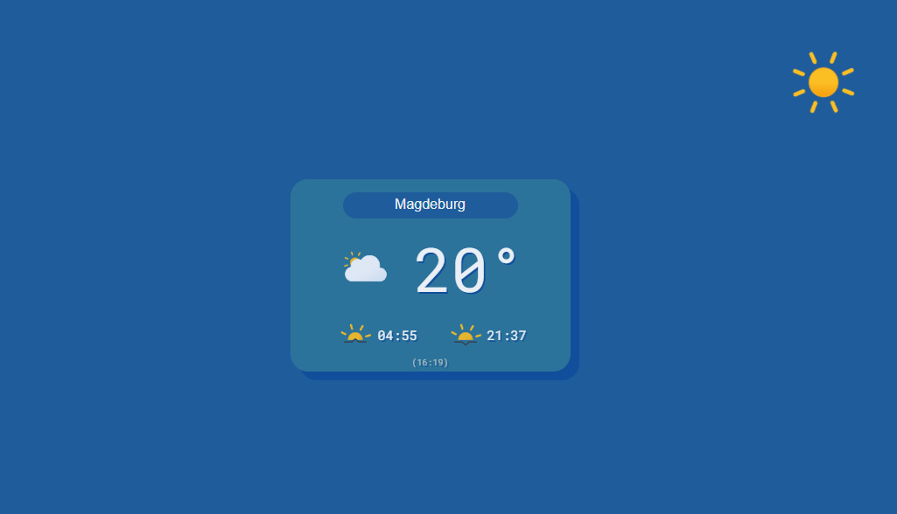

<div class="projectPreviewWrapper">
  <div class="projectDescription">
    <div class="projectPreviewText" (mouseenter)="portfolio.mouseEnterText()" (mouseleave)="portfolio.mouseLeaveText()">
      Mein erstes eigenes Angular Projekt ist diese Wetter-App.
      <br>
      Mittels API-Requests (OpenWeather) werden alle Daten geladen.
      <br>
      Der User kann sich dabei aussuchen, von welcher Stadt er die Wetterdaten abrufen möchte.
    </div>
    
  </div>
  <div class="projectPreviewButtons">
    <button class="projectPreviewButton"><a href="https://github.com/FlorianGenz/wetterApp" target="_blank">
      <mat-icon>open_in_new</mat-icon>
      GitHub</a></button>
    <button class="projectPreviewButton"><a href="https://wetterinmagdeburg.netlify.app" target="_blank">
      <mat-icon>open_in_new</mat-icon>
      Seite besuchen</a></button>
  </div>
</div>
